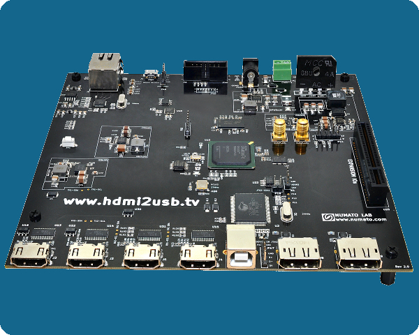

Numato Opsis
The Numato Opsis is the first HDMI2USB production board developed specifically for the HDMI2USB project (as part of the TimVideos project).

Useful Resources
- https://github.com/timvideos/HDMI2USB-numato-opsis-hardware
- https://github.com/timvideos/HDMI2USB-numato-opsis-sample-code
Technical Specifications
| FPGA | Xilinx Spartan-6 LX45T FPGA |
|---|---|
| Memory | 128Mbyte DDR3 |
| Video Interfaces |
|
| Comms |
|
| Storage |
|
| Audio | None |
| Expansion | 1 x Tim's Open FPGA Expansion Interface |
| Power Supply | 12V @ 2A |